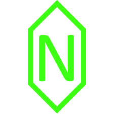

Trò chuyện
Nói chuyện, hỏi đáp, kể chuyện hoặc cào phím. HT-NexusAI được hướng tới cách giao tiếp tự nhiên trên Discord.

HT-NexusAIDISCORD AI · TIẾNG VIỆT
HT-NexusAI được tạo ra để trò chuyện tự nhiên bằng tiếng Việt, hiểu ngữ cảnh và có thể tham gia vào cuộc trò chuyện thay vì chỉ chờ được gọi tên.
Nói chuyện, hỏi đáp, kể chuyện hoặc cào phím. HT-NexusAI được hướng tới cách giao tiếp tự nhiên trên Discord.
Sử dụng ngữ cảnh hội thoại để hiểu những câu phụ thuộc vào nội dung vừa được nói.
Khi server bật tính năng, bot có thể tham gia cuộc trò chuyện mà không cần được mention trực tiếp.
HT-NexusAI vẫn đang được phát triển. Tính năng, cách hoạt động và chính sách có thể được cập nhật khi dự án thay đổi.